6 求職人特質(含因素分析)
#load("F:/提供主計處資料/X5y.RData")
#load("F:/提供主計處資料/求職人檔.RData")
求職人資料 <- 求職人檔
#3.3.1 年齡分布
# boxplot and test
p1 <- ggboxplot(求職人資料, x = "年", y = "年齡",
color = "年")
my_comparisons <- list( c("2019", "2020"), c("2021", "2022"), c("2022", "2023") )
p1 + stat_compare_means(comparisons = my_comparisons)+ # Add pairwise comparisons p-value
stat_compare_means(label.y = 130) # Add global p-value## Warning: Removed 2 rows containing non-finite outside the scale range
## (`stat_boxplot()`).## Warning: Removed 2 rows containing non-finite outside the scale range
## (`stat_signif()`).## Warning: Removed 2 rows containing non-finite outside the scale range
## (`stat_compare_means()`).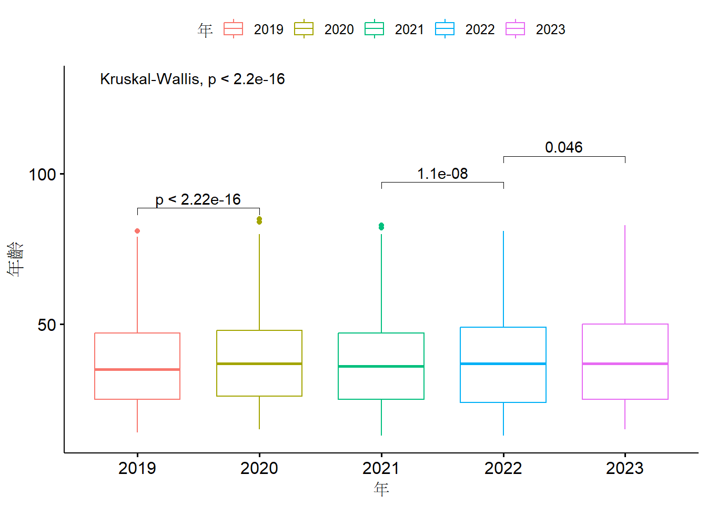
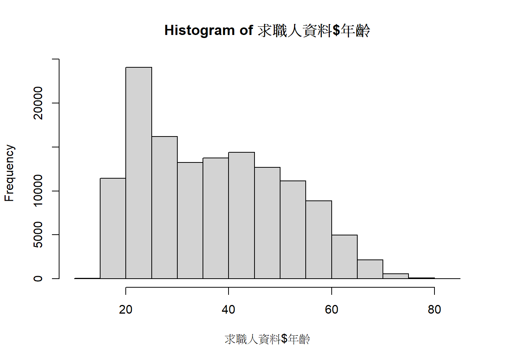
## [1] 85 #年齡分組A
X5y$年齡分組1 <- factor(X5y$年齡分組1, levels=c("少年< 18","青年18-29",
"青壯年30-44","中高齡45-64","高齡 >65"))
library(ggstats)
X5y %>% filter(!is.na(年齡分組1))%>%
ggplot(aes(年齡分組1, fill = 年齡分組1)) +
geom_bar() +
geom_text(stat = "count", aes(label = after_stat(count)),
vjust=-0.5, position=position_dodge(width=1),
size=3) + xlab("年齡分組") +ylab("人數") +
geom_text(stat = "prop", aes(label = percent(after_stat(prop),0.1)),
vjust=2, position=position_dodge(width=1),
size=3,color="darkred") +
xlab("年齡分組") +ylab("人數") +
ggtitle("求職人年齡分組1")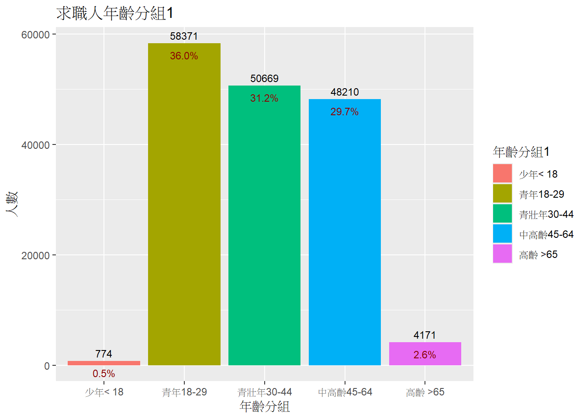
#年齡分組B
X5y$年齡分組2 <- factor(X5y$年齡分組2,
levels=c("<= 15","16-20","21-25","26-30","31-35","36-40",
"41-45","46-50","51-55","56-60","61-65","> 65"))
X5y %>% filter(!is.na(年齡分組2))%>%
ggplot(aes(年齡分組2, fill = 年齡分組2)) +
geom_bar() +
geom_text(stat = "count", aes(label = after_stat(count)),
vjust=-0.5, position=position_dodge(width=1),
size=3) + xlab("年齡分組") +ylab("人數") +
geom_text(stat = "prop", aes(label = percent(after_stat(prop),0.1)),
vjust=2, position=position_dodge(width=1),
size=3,color="darkred") +
xlab("年齡分組") +ylab("人數") +
ggtitle("求職人年齡分組2")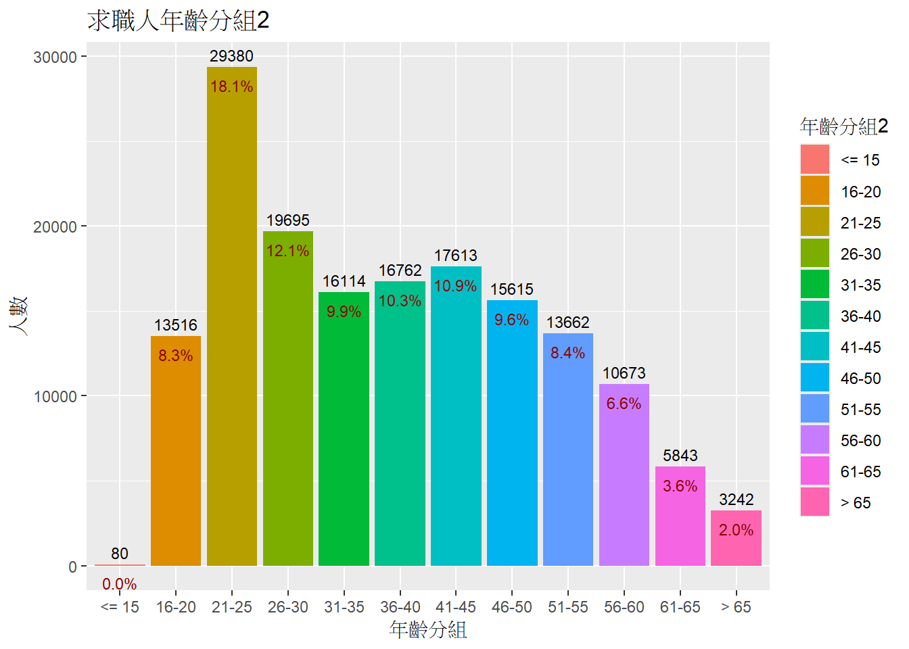
# 3.3.2 障別
障別 <- 求職人資料 %>% group_by(障別1) %>%
filter(!is.na(障別1))%>%
summarise(count=n())
障別$障別1 <- factor(障別$障別1,
levels=c("上肢體障礙者","下肢體障礙者","多重障礙者",
"罕見疾病致身心障礙者","先天代謝異常","其他"))
ggbarplot(障別, x = "障別1", y = "count", label = T,
label.pos = "in", width = 0.8,position = position_dodge(1),
fill = "障別1",color = "white",legend="none",
palette = "jco", x.text.angle = 30,ylim = c(0, 200) ) 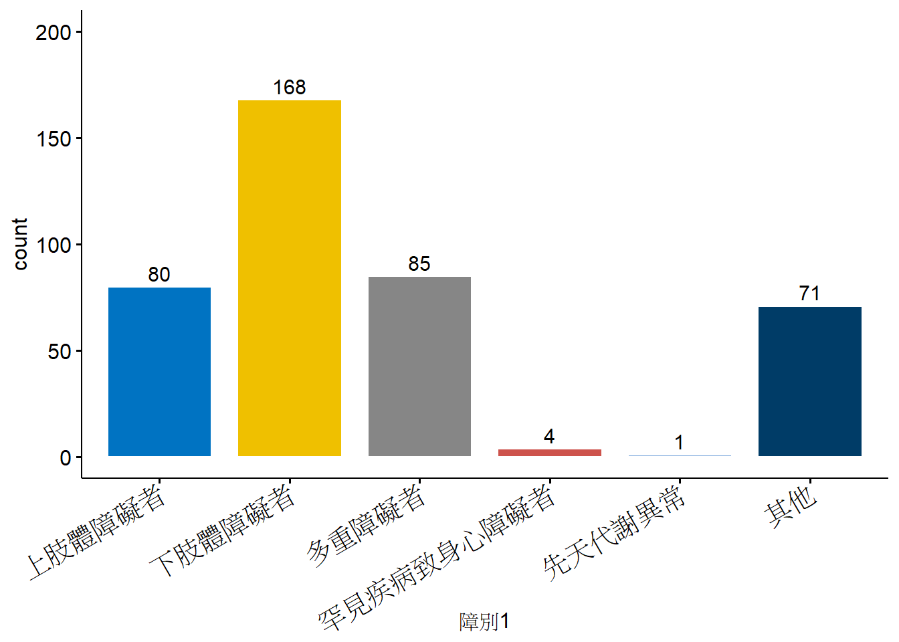
## # A tibble: 9 × 2
## 教育程度 n
## <chr> <int>
## 1 其他 600
## 2 博士 126
## 3 國中 9120
## 4 國小 2758
## 5 大學 55172
## 6 專科 14963
## 7 碩士 4667
## 8 高中 7408
## 9 高職 38920 教育程度 <- 求職人資料 %>% group_by(教育程度) %>%
summarise(count=n())
教育程度$教育程度 <- factor(教育程度$教育程度,
levels=c("國小","國中","高職","高中","專科","大學",
"碩士","博士","其他"))
ggbarplot(教育程度, x = "教育程度", y = "count", label = T,
label.pos = "in", width = 0.8,position = position_dodge(1),
fill = "教育程度",color = "white",legend="none",
palette = "jco", x.text.angle = 30 ) 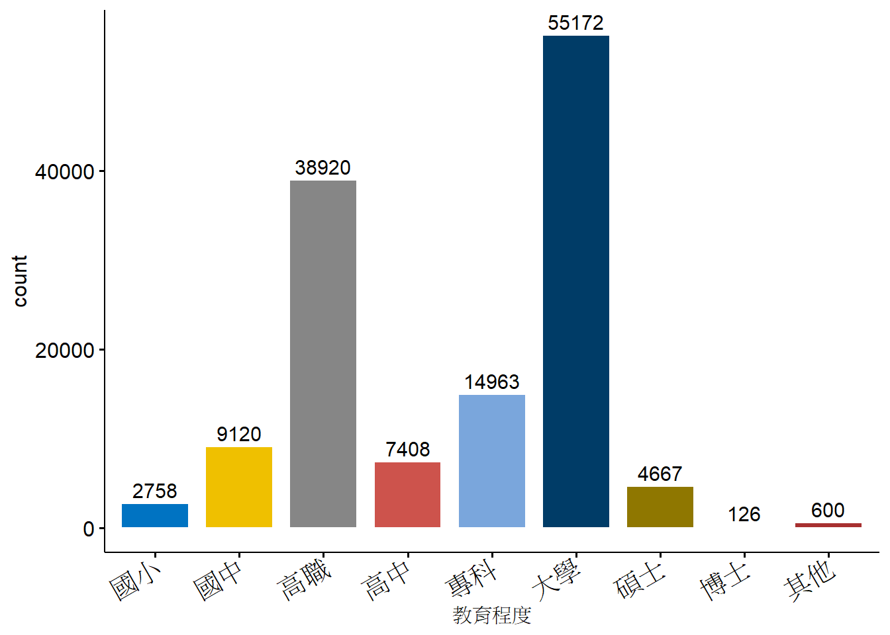
## # A tibble: 5 × 2
## 英文語言能力 n
## <chr> <int>
## 1 不懂 92573
## 2 普通 20263
## 3 稍懂 18019
## 4 精通 2851
## 5 <NA> 28## # A tibble: 5 × 2
## 日文語言能力 n
## <chr> <int>
## 1 不懂 124804
## 2 普通 2467
## 3 稍懂 5872
## 4 精通 562
## 5 <NA> 29 語言能力1 <- 求職人資料 %>% group_by(英文語言能力) %>%
summarise(英文=n()) %>% rename(語言能力=英文語言能力)
語言能力2 <- 求職人資料 %>% group_by(日文語言能力) %>%
summarise(日文=n())%>% rename(語言能力=日文語言能力)
語言能力=cbind(語言能力1,語言能力2[,2])
ggbarplot(語言能力, x = "語言能力", y = "英文", label = T,
label.pos = "in", width = 0.5,position = position_dodge(0.9),
fill = "語言能力",color = "white",legend="none",
palette = "jco", x.text.angle = 30 ) 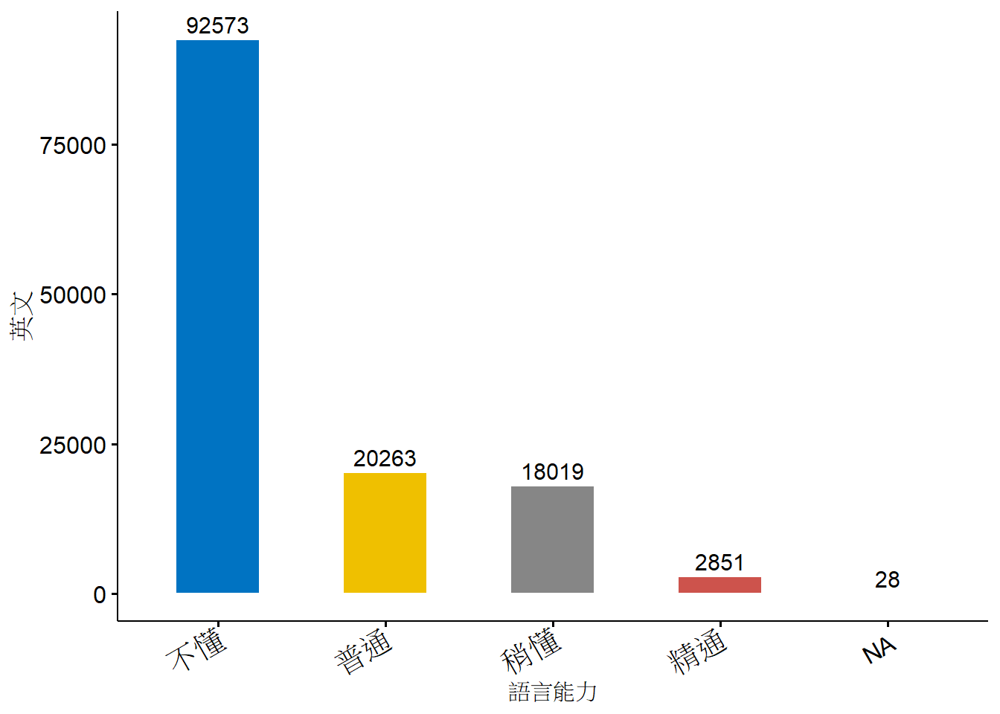
ggbarplot(語言能力, x = "語言能力", y = "日文", label = T,
label.pos = "in", width = 0.5,position = position_dodge(0.9),
fill = "語言能力",color = "white",legend="none",
palette = "jco", x.text.angle = 30 ) 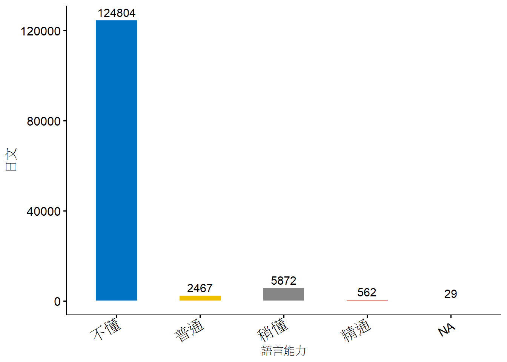
# 個案區分
個案區分 <- 求職人資料 %>% select(年,個案區分1,個案區分2,個案區分3,
個案區分4,個案區分5,個案區分6,個案區分7)
A <- pivot_longer(個案區分, cols=starts_with("個案區分"),
names_to = "個案",
values_to = "區分", values_drop_na = FALSE)
A$區分 <- trimws(A$區分, which = c("both", "left", "right"))
#分割個案區分
A$區分碼 <- str_split_i(A$區分,"-",1)
A$區分名 <- str_split_i(A$區分,"-",2)
A <- A %>% select(-2,-3)
#A <- A %>% select(區分名) %>%
#A1 <- A %>% count(區分名) %>% arrange(desc(n))
A1 <- A %>% count(年,區分名) %>% arrange(desc(n))
年_個案區分 <- pivot_wider(A1, names_from = 年,
values_from = n) %>%
select(區分名,"2019","2020","2021","2022","2023")
# 用table來呈現
A %>% select(區分名) %>%
tbl_summary(label=區分名~"個案身分名稱",
sort = list(區分名 ~ "frequency"))| Characteristic | N = 936,1381 |
|---|---|
| 個案身分名稱 | |
| 失業給付者 | 38,690 (13%) |
| 就保失業者 | 38,635 (13%) |
| 一般資遣員工 | 37,444 (13%) |
| 中高齡者 | 37,211 (13%) |
| 一般求職者 | 37,169 (13%) |
| 非自願離職 | 36,756 (13%) |
| 青少年(十五歲至二十四歲) | 26,148 (8.9%) |
| 身心障礙者 | 5,055 (1.7%) |
| 專案短期工作 | 3,348 (1.1%) |
| 原住民 | 3,054 (1.0%) |
| 工讀生 | 2,914 (1.0%) |
| 高齡者 | 2,865 (1.0%) |
| 其他 | 2,853 (1.0%) |
| 中低收入戶 | 2,732 (0.9%) |
| 因家庭因素退出勞動市場二年以上，重返職場之婦女 | 2,125 (0.7%) |
| 長期失業者 | 2,029 (0.7%) |
| 低收入戶 | 1,608 (0.5%) |
| 公共服務 | 1,523 (0.5%) |
| 獨力負擔家計者 | 1,144 (0.4%) |
| 一般更生受保護人 | 1,011 (0.3%) |
| 大專應屆畢業生 | 939 (0.3%) |
| 已退休並領取老年年金或退休金者 | 878 (0.3%) |
| 青年專案 | 878 (0.3%) |
| 外籍配偶 | 865 (0.3%) |
| 大陸配偶 | 756 (0.3%) |
| 藥癮更生受保護人 | 613 (0.2%) |
| 長期照顧人力(需證照) | 521 (0.2%) |
| 失業期間連續達3個月 | 475 (0.2%) |
| 高中職應屆畢業生 | 468 (0.2%) |
| 志願役退除役軍人 | 356 (0.1%) |
| 職訓結訓學員 | 204 (<0.1%) |
| 關廠歇業資遣員工 | 174 (<0.1%) |
| 求職弱勢者 | 154 (<0.1%) |
| 弱勢青少年 | 153 (<0.1%) |
| 退出職場180日婦女 | 140 (<0.1%) |
| 屆退官兵 | 136 (<0.1%) |
| 家庭暴力被害人 | 106 (<0.1%) |
| 農民 | 98 (<0.1%) |
| 88水災受災者 | 94 (<0.1%) |
| 天然災害災後就業服務作業 | 87 (<0.1%) |
| 已退休尚未領取老年年金或退休金者 | 69 (<0.1%) |
| 大陸地區人民 | 68 (<0.1%) |
| 經濟弱勢戶 | 68 (<0.1%) |
| 特殊境遇家庭身分認定者 | 67 (<0.1%) |
| 遊民 | 45 (<0.1%) |
| 連結重點產業計畫青年 | 44 (<0.1%) |
| 連結重點產業計畫青年(特定學門) | 40 (<0.1%) |
| 希望就業專案 | 37 (<0.1%) |
| 教育部提供即將畢業且願接受政府就業服務者 | 36 (<0.1%) |
| 參加過永續、多元及臨時工作津貼者 | 34 (<0.1%) |
| 非更生受保護藥癮者 | 26 (<0.1%) |
| 榮眷 | 25 (<0.1%) |
| 人口販運被害人 | 20 (<0.1%) |
| 公營事業民營化資遣員工 | 17 (<0.1%) |
| 漁民 | 14 (<0.1%) |
| 職業災害勞工 | 12 (<0.1%) |
| 犯罪被害人 | 11 (<0.1%) |
| 育嬰留職停薪及產假補充人力 | 11 (<0.1%) |
| 97 | 10 (<0.1%) |
| 其他機構轉介案 | 9 (<0.1%) |
| 15歲以上未滿18歲未就學未就業少年 | 8 (<0.1%) |
| 98年4月就博會求職者 | 8 (<0.1%) |
| 大陸失業台籍幹部 | 7 (<0.1%) |
| 性侵害被害人 | 5 (<0.1%) |
| 七二水災戶 | 4 (<0.1%) |
| 公共工程 | 3 (<0.1%) |
| 參加職業工會三個月以上之失業勞工 | 3 (<0.1%) |
| 艱困傳統產業勞工 | 3 (<0.1%) |
| 9506水災專案 | 2 (<0.1%) |
| 多元性別 | 2 (<0.1%) |
| 具精神疾病診斷(無身障證明者) | 2 (<0.1%) |
| 傳統市場轉業者 | 2 (<0.1%) |
| 跨性別友善需求者 | 2 (<0.1%) |
| 9406水災專案 | 1 (<0.1%) |
| 九二一地震受災失業者 | 1 (<0.1%) |
| 中小企業人力協助計畫 | 1 (<0.1%) |
| 中途離校學生 | 1 (<0.1%) |
| 失智症者 | 1 (<0.1%) |
| 因應貿易自由化協助對象 | 1 (<0.1%) |
| 艾利風災受災戶 | 1 (<0.1%) |
| 家庭暴力及性侵害被害人 | 1 (<0.1%) |
| 農業就獎計畫 | 1 (<0.1%) |
| Unknown | 643,006 |
| 1 n (%) | |
## # A tibble: 83 × 6
## 區分名 `2019` `2020` `2021` `2022` `2023`
## <chr> <int> <int> <int> <int> <int>
## 1 <NA> 142471 116259 119878 117129 147269
## 2 中高齡者 7018 6984 6724 7186 9299
## 3 一般求職者 8984 7596 6790 6136 7663
## 4 就保失業者 7669 8447 7449 6587 8483
## 5 失業給付者 7938 8370 7349 6648 8385
## 6 一般資遣員工 7587 8014 7194 6492 8157
## 7 非自願離職 7320 7936 7029 6355 8116
## 8 青少年(十五歲至二十四歲) 4773 4080 5493 5443 6359
## 9 身心障礙者 852 812 771 1058 1562
## 10 原住民 496 452 506 674 926
## # ℹ 73 more rows C <- head(年_個案區分,30)
#計算比例
C <- A %>% filter(年=="2023") %>%
count(區分名) %>%
mutate(prop = percent(round(n/sum(n),3))) %>%
arrange(desc(n))
# 用table來呈現
C %>%
kbl(caption = "個案區分統計一覽表") %>%
kable_classic(full_width = FALSE, html_font = "Cambria")| 區分名 | n | prop |
|---|---|---|
| NA | 147269 | 68.5% |
| 中高齡者 | 9299 | 4.3% |
| 就保失業者 | 8483 | 3.9% |
| 失業給付者 | 8385 | 3.9% |
| 一般資遣員工 | 8157 | 3.8% |
| 非自願離職 | 8116 | 3.8% |
| 一般求職者 | 7663 | 3.6% |
| 青少年(十五歲至二十四歲) | 6359 | 3.0% |
| 身心障礙者 | 1562 | 0.7% |
| 原住民 | 926 | 0.4% |
| 高齡者 | 915 | 0.4% |
| 因家庭因素退出勞動市場二年以上，重返職場之婦女 | 728 | 0.3% |
| 專案短期工作 | 709 | 0.3% |
| 其他 | 644 | 0.3% |
| 中低收入戶 | 637 | 0.3% |
| 工讀生 | 604 | 0.3% |
| 長期失業者 | 429 | 0.2% |
| 低收入戶 | 407 | 0.2% |
| 已退休並領取老年年金或退休金者 | 372 | 0.2% |
| 公共服務 | 336 | 0.2% |
| 長期照顧人力(需證照) | 250 | 0.1% |
| 獨力負擔家計者 | 237 | 0.1% |
| 一般更生受保護人 | 228 | 0.1% |
| 外籍配偶 | 226 | 0.1% |
| 大專應屆畢業生 | 225 | 0.1% |
| 志願役退除役軍人 | 207 | 0.1% |
| 青年專案 | 180 | 0.1% |
| 大陸配偶 | 166 | 0.1% |
| 藥癮更生受保護人 | 166 | 0.1% |
| 失業期間連續達3個月 | 153 | 0.1% |
| 退出職場180日婦女 | 140 | 0.1% |
| 高中職應屆畢業生 | 93 | 0.0% |
| 屆退官兵 | 89 | 0.0% |
| 職訓結訓學員 | 67 | 0.0% |
| 已退休尚未領取老年年金或退休金者 | 48 | 0.0% |
| 連結重點產業計畫青年 | 44 | 0.0% |
| 連結重點產業計畫青年(特定學門) | 40 | 0.0% |
| 關廠歇業資遣員工 | 35 | 0.0% |
| 求職弱勢者 | 32 | 0.0% |
| 天然災害災後就業服務作業 | 23 | 0.0% |
| 家庭暴力被害人 | 21 | 0.0% |
| 弱勢青少年 | 21 | 0.0% |
| 農民 | 20 | 0.0% |
| 大陸地區人民 | 18 | 0.0% |
| 遊民 | 18 | 0.0% |
| 非更生受保護藥癮者 | 17 | 0.0% |
| 特殊境遇家庭身分認定者 | 13 | 0.0% |
| 人口販運被害人 | 12 | 0.0% |
| 參加過永續、多元及臨時工作津貼者 | 9 | 0.0% |
| 榮眷 | 9 | 0.0% |
| 經濟弱勢戶 | 9 | 0.0% |
| 教育部提供即將畢業且願接受政府就業服務者 | 7 | 0.0% |
| 公營事業民營化資遣員工 | 5 | 0.0% |
| 漁民 | 5 | 0.0% |
| 犯罪被害人 | 5 | 0.0% |
| 公共工程 | 2 | 0.0% |
| 具精神疾病診斷(無身障證明者) | 2 | 0.0% |
| 大陸失業台籍幹部 | 2 | 0.0% |
| 職業災害勞工 | 2 | 0.0% |
| 跨性別友善需求者 | 2 | 0.0% |
| 15歲以上未滿18歲未就學未就業少年 | 1 | 0.0% |
| 育嬰留職停薪及產假補充人力 | 1 | 0.0% |
| 艱困傳統產業勞工 | 1 | 0.0% |
#graph
D <- A1 %>% filter(年=="2023" & !is.na(區分名)) %>% head(30)
ggbarplot(D, x = "區分名", y = "n",
fill = "區分名", # change fill color by cyl
color = "white", # Set bar border colors to white
#palette = "jco", # jco journal color palett. see ?ggpar
x.text.angle = 30 , # Rotate vertically x axis texts
show.legend = FALSE)+
theme(legend.position = "none")+
theme(axis.text = element_text(face="bold",size = 5)) #xy-axis label size..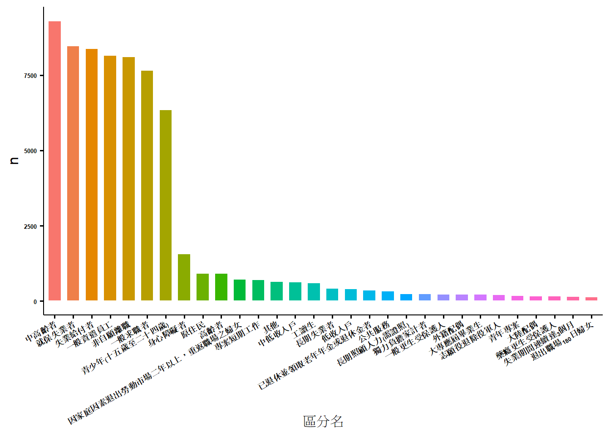
## # A tibble: 9 × 2
## 清結原因1 n
## <chr> <int>
## 1 利用本部資訊就業 63861
## 2 尚具求職需求 1366
## 3 推薦成功 26540
## 4 改利用其他管道 5661
## 5 暫停就業 10940
## 6 無法聯繫 7054
## 7 系統自動關閉 13536
## 8 自行就業 2608
## 9 <NA> 2168## `summarise()` has grouped output by '年'. You can override using the `.groups`
## argument. 清結原因$清結原因1 <- factor(清結原因$清結原因1,
levels=c("推薦成功","利用本部資訊就業",
"自行就業","改利用其他管道","暫停就業",
"無法聯繫","系統自動關閉","尚具求職需求",
NA))
D <- 清結原因 %>% filter(年=="2023" & !is.na(清結原因1))
ggbarplot(D, x = "清結原因1", y = "count", label = T,
label.pos = "in", width = 0.5,position = position_dodge(0.9),
fill = "年",color = "white",ylim=c(0,18000),
palette = "jco", x.text.angle = 30 ) 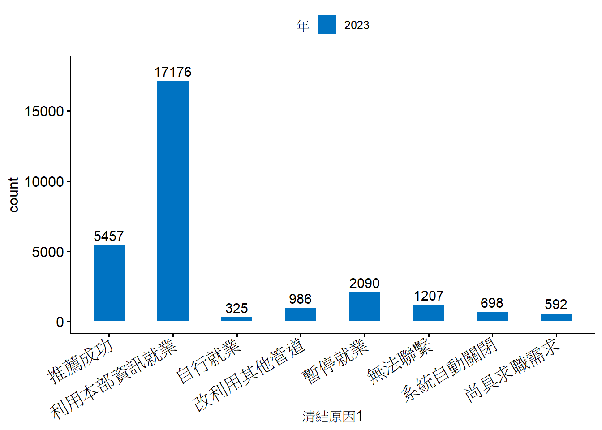
#兵役
A <- 求職人資料 %>% group_by(年,兵役) %>%
summarise(count=(n())) %>%
mutate(prop = percent(round(count/sum(count),3))) ## `summarise()` has grouped output by '年'. You can override using the `.groups`
## argument. p <- ggplot(A, aes(兵役, count, label = prop,fill=兵役))+
labs(x = NULL, y = NULL) # Hide axis label
p + geom_bar(stat = "identity") + ggtitle("兵役狀態")+
geom_text(aes(label = prop),vjust="outward")+
facet_wrap(.~年)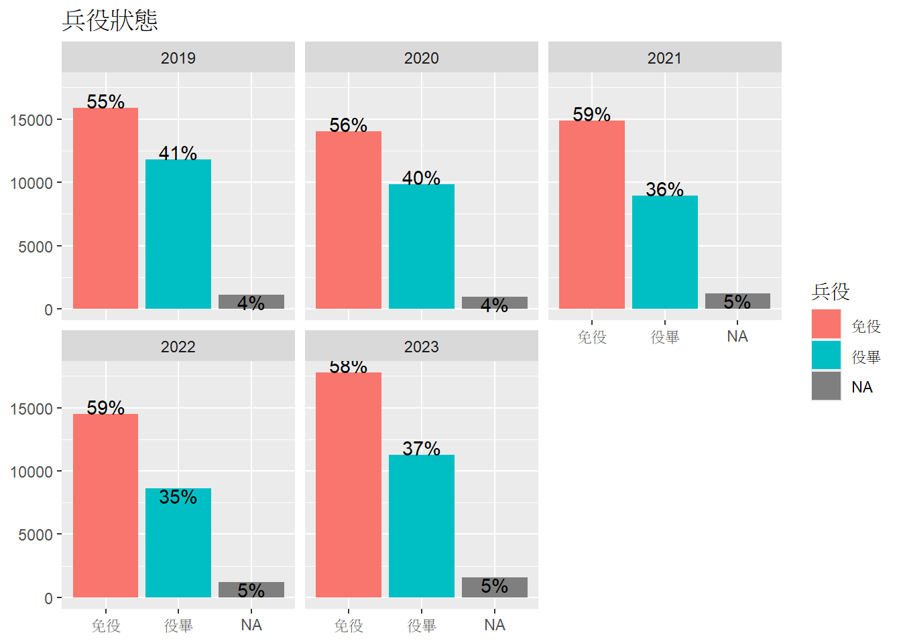
# 希望待遇與前次工資
求職人資料$希望待遇 <- as.integer(求職人資料$希望待遇)
求職人資料$前次工作薪資 <- as.integer(求職人資料$前次工作薪資)
B <- 求職人資料 %>% select(年,教育程度,希望待遇,前次工作薪資,
年齡分組1,清結原因1)
B$希望待遇 <- ifelse(B$希望待遇!=0,B$希望待遇,NA)
B$前次工作薪資 <- ifelse(B$前次工作薪資!=0,B$前次工作薪資,NA)
ggplot(B, aes(x=教育程度, y=希望待遇))+
geom_boxplot(outliers = FALSE,na.rm = TRUE) +
stat_summary(fun=mean, geom="point", shape=5, size=3)+
stat_summary(aes(label=round(..y..,0)), fun.y=mean, geom="text", size=3,
vjust = -0.5)## Warning: The `fun.y` argument of `stat_summary()` is deprecated as of ggplot2 3.3.0.
## ℹ Please use the `fun` argument instead.
## This warning is displayed once every 8 hours.
## Call `lifecycle::last_lifecycle_warnings()` to see where this warning was
## generated.## Warning: The dot-dot notation (`..y..`) was deprecated in ggplot2 3.4.0.
## ℹ Please use `after_stat(y)` instead.
## This warning is displayed once every 8 hours.
## Call `lifecycle::last_lifecycle_warnings()` to see where this warning was
## generated.## Warning: Removed 106624 rows containing non-finite outside the scale range
## (`stat_summary()`).
## Removed 106624 rows containing non-finite outside the scale range
## (`stat_summary()`).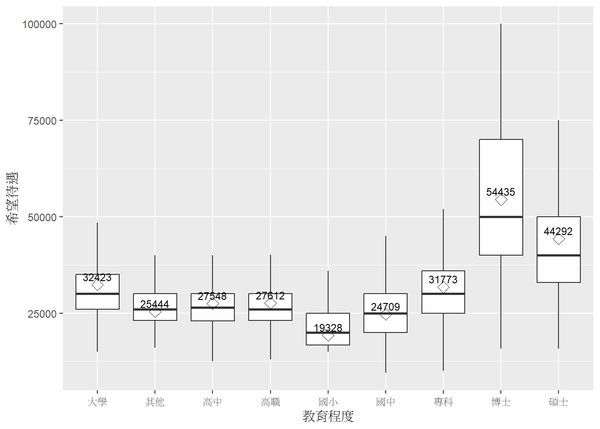
# 薪資落差
C <- na.omit(B) #去掉NA，使可以比較薪資差異
薪資落差 <- C %>% mutate(薪資差異=希望待遇-前次工作薪資)
#找出異常值
out.薪資差異 <- boxplot.stats(薪資落差$薪資差異)$out
out_ind <- which(薪資落差$薪資差異 %in% c(out.薪資差異))
D<- 薪資落差[-out_ind, ]
ggplot(D, aes(x=教育程度, y=薪資差異))+
geom_boxplot(outliers = T) +
stat_summary(fun=mean, geom="point", shape=5, size=3)+
stat_summary(aes(label=round(..y..,0)), fun.y=mean, geom="text", size=3,
vjust = -0.5)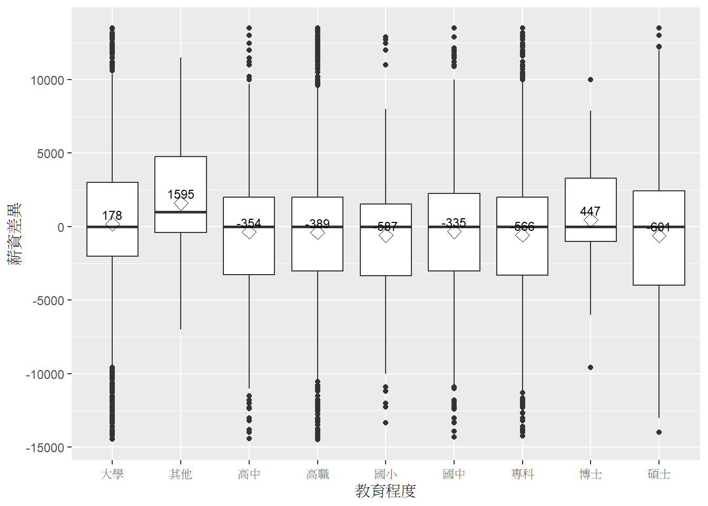
#工作地點與居住行政區
#居住地點分布
F <- 求職人資料 %>% select(年,居住行政區) %>%
filter(str_detect(居住行政區, "市")|str_detect(居住行政區, "縣"))
F$居住市 <- str_sub(F$居住行政區,1,2)
#居住市來源
G1 <- F %>% group_by(居住市) %>%
summarise(人數=n()) %>% arrange(desc(人數)) %>%
mutate(prop = round(人數/sum(人數),3)) %>%
filter(prop>0.001)
G1$居住市## [1] "高雄" "屏東" "台南" "台中" "嘉義" "新北" "桃園" "彰化" "雲林" "台北"
## [11] "台東" "新竹" #年齡分組A
G1$居住市<- factor(G1$居住市,
levels=c("高雄","屏東","台南","嘉義","雲林","彰化",
"台中","新竹","新北", "桃園","台北", "台東"))
ggplot(G1,aes(x=居住市,y = 人數,fill = 居住市)) +
geom_col(,show.legend = FALSE) +
geom_text(aes(label = 人數),
vjust=-0.5, position=position_dodge(width=1),
size=3) + xlab("居住城市") +ylab("人數") +
ggtitle("求職人員居住城市統計一覽表")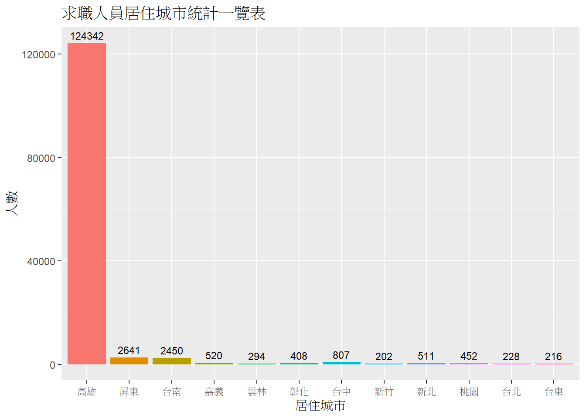
F <- F %>% filter(居住市=="高雄")
F$居住區 <-str_split_i(F$居住行政區,"市",2)
G2 <- F %>% group_by(居住區) %>%
summarise(人數=n()) %>% arrange(desc(人數)) %>%
mutate(prop = round(人數/sum(人數),3)) %>%
filter(prop>0.001)
G2 <- head(G2,10)
G2$居住區<- factor(G2$居住區,
levels=c("鳳山區", "三民區", "楠梓區", "左營區", "前鎮區" ,
"苓雅區", "小港區", "大寮區", "鼓山區","岡山區"))
ggplot(G2,aes(x=居住區,y = 人數,fill = 居住區)) +
geom_col(show.legend = FALSE) +
geom_text(aes(label = 人數),
vjust=-0.5, position=position_dodge(width=1),
size=3,color="darkred") + xlab("居住城市") +ylab("人數") +
geom_text(aes(label = percent(prop,0.1)),
vjust=2, position=position_dodge(width=1),
size=3) +
ggtitle("求職人員高雄市居住區域統計一覽表")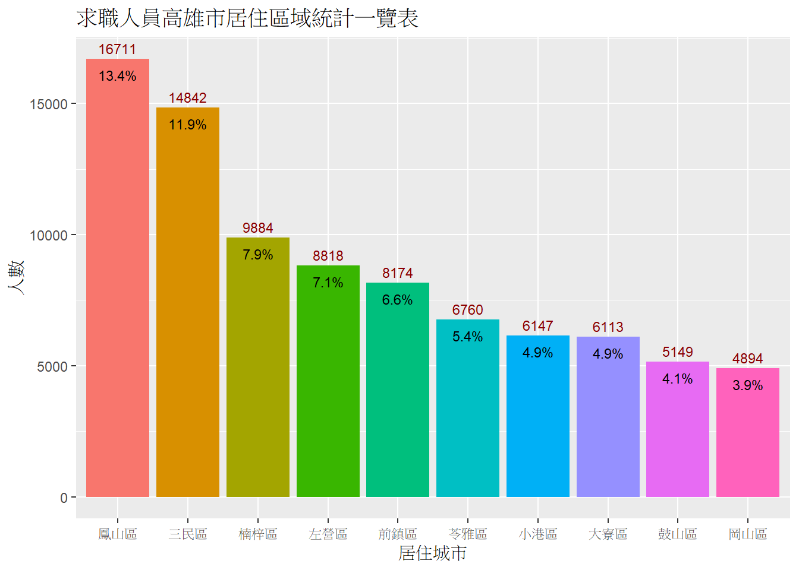